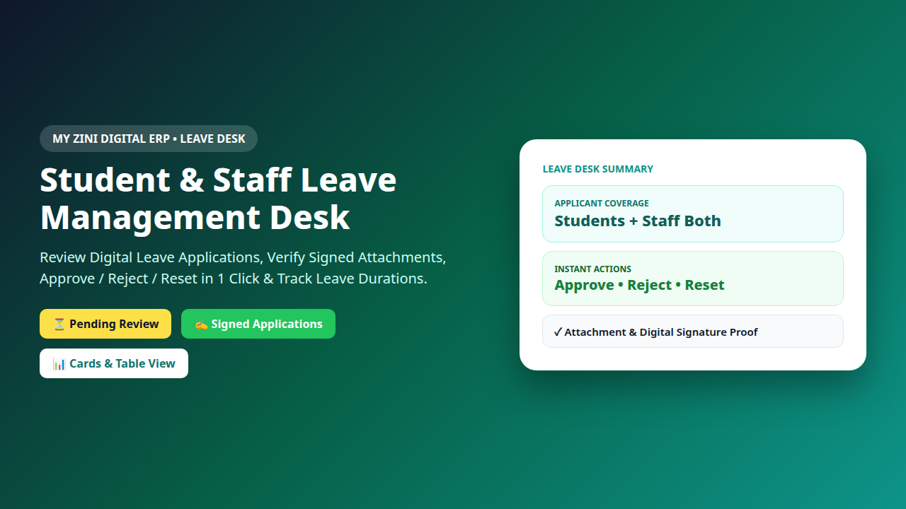
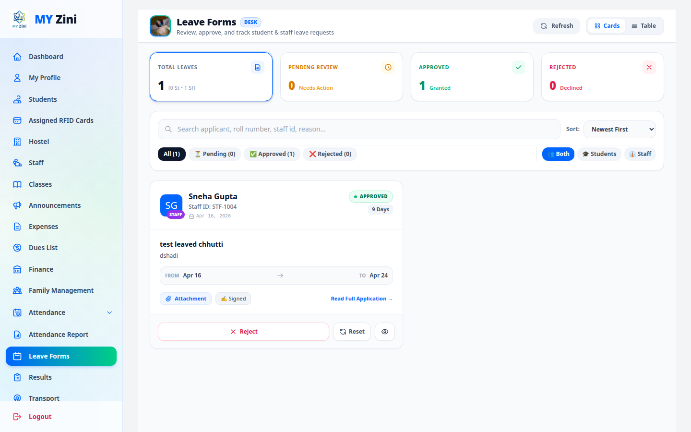
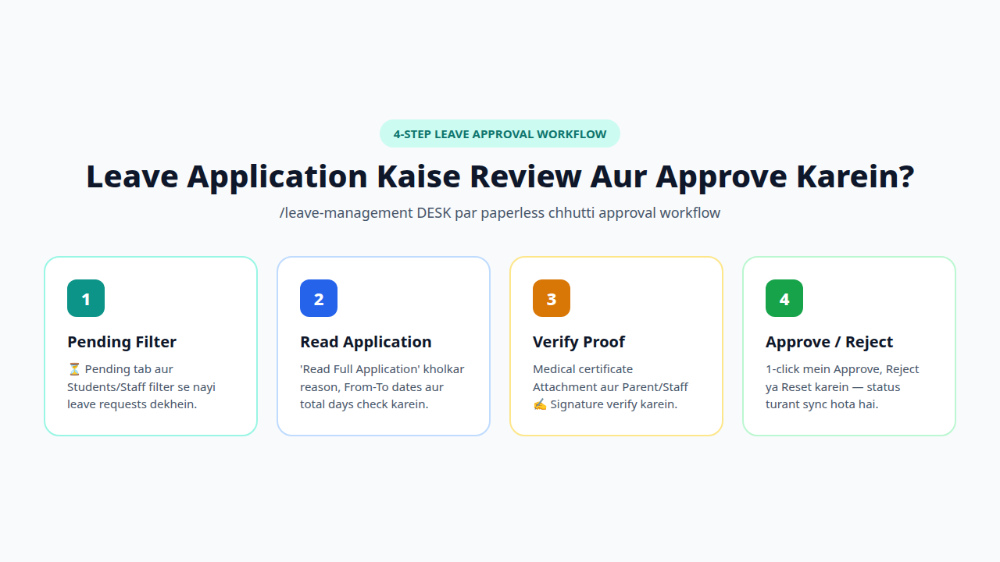
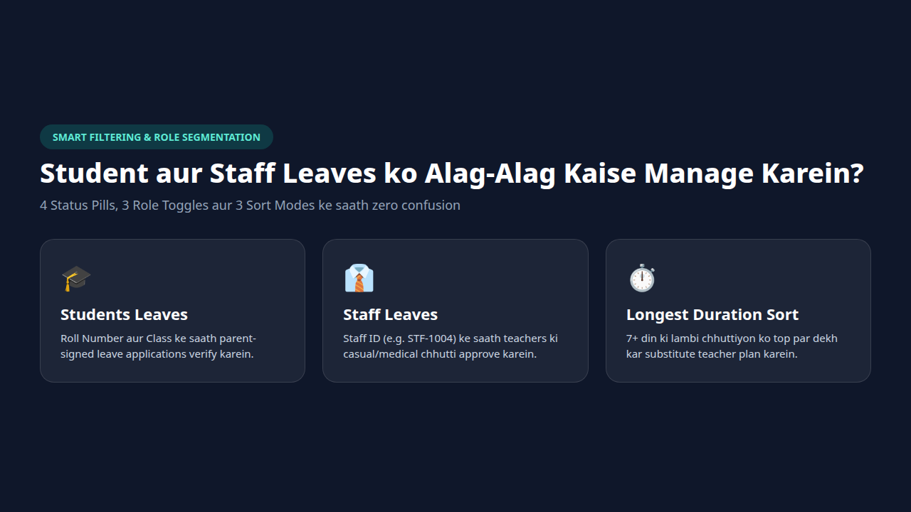
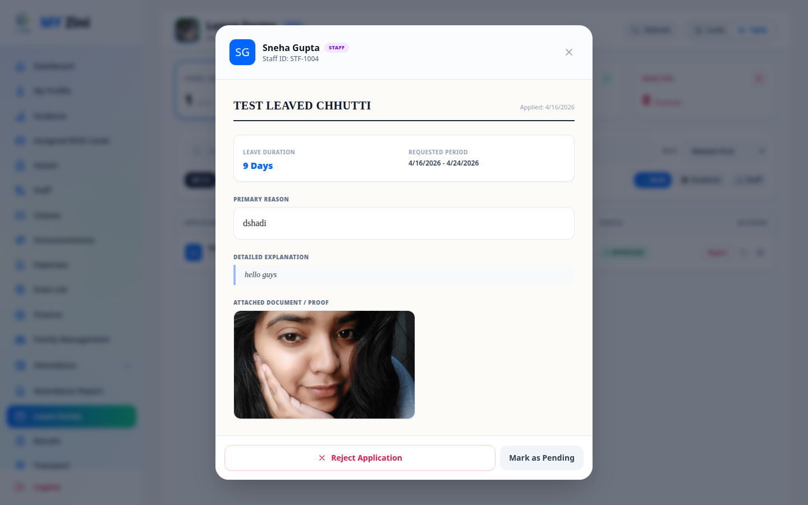
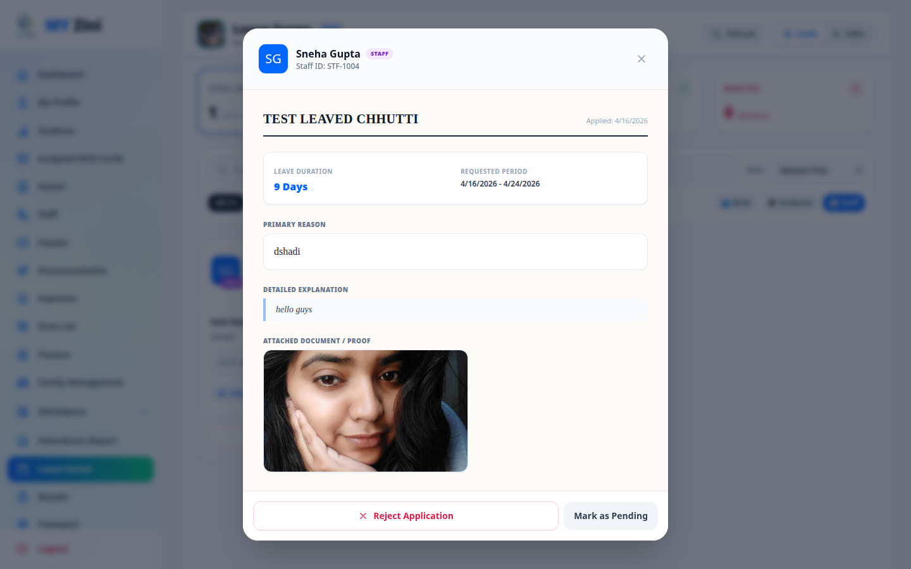
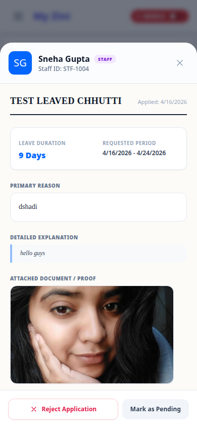
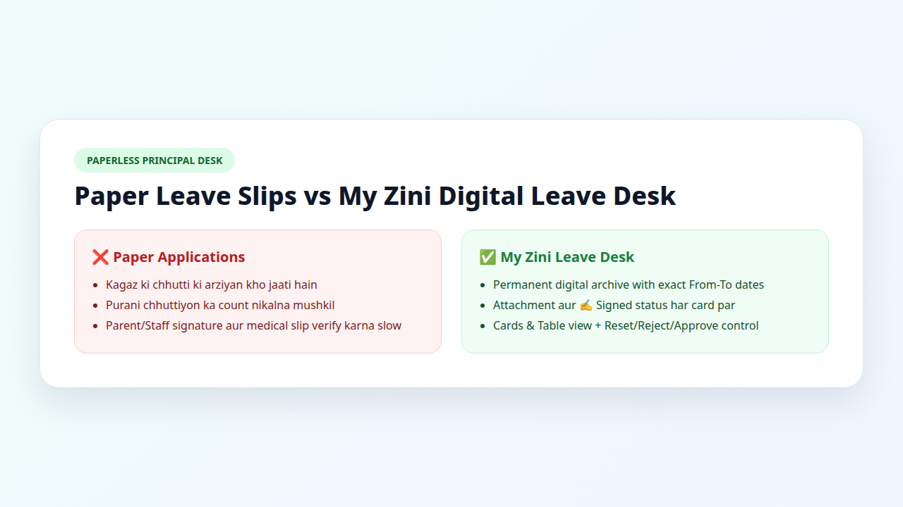

My Zini Digital ERP mein Leave Forms aur Student-Staff Chhutti Kaise Manage Karein? (Complete Hinglish Guide)
School mein rozana students aur teachers ki chhutti (leave) ke liye kagaz ki applications aati hain — kabhi WhatsApp par photo aati hai, toh kabhi register mein likhwaya jaata hai. Aise mein Principal ke liye yeh track karna mushkil ho jaata hai ki kisne kitne din ki chhutti li, medical certificate laga hai ya nahi, aur kaunsi application abhi pending hai. Isi problem ko 100% paperless banane ke liye My Zini Digital ERP mein Leave Forms DESK (/leave-management) diya gaya hai. Is guide mein humne live portal par har button, card/table switcher, full application modal, attachment proof, digital signature aur filters ko test karke poora Hinglish walkthrough तैयार kiya hai.

⚡ TL;DR — Quick Summary (AI & Reader Snapshot)
- Route: Sidebar mein
Leave Forms(https://myzini.digitalerp.shop/leave-management). - 4 Live KPI Cards: Total Leaves (Students vs Staff split), Pending Review (Needs Action), Approved (Granted), aur Rejected (Declined).
- Dual View Modes: Top-right mein
Refresh,CardsaurTableview toggle milta hai. - Smart Filters: Search box (applicant, roll no, staff ID, reason), Sort dropdown (3 modes), 4 Status pills (
All,⏳ Pending,✅ Approved,❌ Rejected), aur 3 Role pills (👥 Both,🎓 Students,👔 Staff). - Full Application Modal:
Read Full Application →kholkar Leave Duration, Requested Period, Primary Reason, Detailed Explanation,Attachment(Click to enlarge) aur✍️ Applicant Signaturedekhein.
1. Leave Forms DESK Overview aur 4 Live KPI Cards
Jab aap left sidebar se Leave Forms par click karte hain, toh aapke saamne Leave Forms DESK khul jaata hai jiska subtitle hai: "Review, approve, and track student & staff leave requests". Top-right par aapko Refresh button aur Cards / Table view switcher dikhai deta hai.
Dashboard ke upar 4 clear KPI summary cards hote hain jo har action ke saath automatically update hote hain:
📋 TOTAL LEAVES
Kul leave requests aur unka split — jaise 1 (0 St • 1 Sf) yani 0 Students aur 1 Staff application.
⏳ PENDING REVIEW
Needs Action — woh applications jin par Principal ya Admin ka decision abhi baaki hai.
✅ APPROVED
Granted — manzoor ki gayi sabhi chhuttiyon ka live count.
❌ REJECTED
Declined — reject ki gayi leave requests ka complete record.

2. Leave Card Details aur "Read Full Application" Modal (Attachment & Signature)
Har Leave Card par hi aapko zaroori details mil jaati hain: Role badge (STAFF ya STUDENT), Applicant Name (jaise Sneha Gupta), ID (Staff ID: STF-1004), Applied Date (Apr 16, 2026), Status badge (APPROVED), Duration badge (9 Days), Subject, Reason, aur FROM Apr 16 se TO Apr 24 tak ki date range. Iske saath hi Attachment aur ✍️ Signed indicators bhi dikhte hain.

Jaise hi aap card par Read Full Application → button dabate hain, poora detailed application modal khulta hai jisme neeche diye gaye sections hote hain:
- Applicant & Subject Header: Name, Role badge (
STAFF/STUDENT), ID (STF-1004), Subject title aurApplied: 4/16/2026. - LEAVE DURATION & REQUESTED PERIOD: Exact kitne din ki chhutti hai (e.g.
9 Days) aur exact start-end dates (4/16/2026 - 4/24/2026). - PRIMARY REASON & DETAILED EXPLANATION: Short reason category ke saath applicant ka poora likha hua explanation.
- ATTACHED DOCUMENT / PROOF: Agar student ne medical slip ya staff ne koi proof upload kiya hai, toh woh thumbnail ke saath dikhta hai — aur
Click to enlargepar tap karke aap use full-screen zoom karke padh sakte hain. - APPLICANT SIGNATURE: Parent ya Staff ke digital signature ki live image verification.
- Decision Buttons: Status ke hisab se modal aur card dono par instant buttons milte hain: Approve, Reject Application, Mark as Pending, ya Reset.

3. Cards vs Table View, Search, Sort aur Students/Staff Segmentation
Jab school mein ek saath 20–50 leave requests aa jaayein, toh Principal apni suvidha ke hisab se Cards view (visual inspection ke liye) ya Table view (compact list dekhne ke liye) mein switch kar sakte hain.

- Multi-Field Search Box: Placeholder
Search applicant, roll number, staff id, reason...— aap kisi student ka Roll Number, Staff ID (STF-1004), naam (Sneha), ya chhutti ka reason type karke turant search kar sakte hain. - 3 Sort Modes:
Newest First,Oldest First, aurLongest Duration(lambi chhuttiyon ko sabse upar dekhne ke liye). - 4 Status Filter Pills:
All,⏳ Pending,✅ Approved, aur❌ Rejected. - 3 Role Filter Pills:
👥 Both,🎓 Students, aur👔 Staff.


4. Mobile Responsive View aur Paper Leave Register se Tulna
Chahe aap school office ke desktop par hon ya ghar par apne phone (390px viewport) par, Leave Forms DESK har device par cleanly adjust hota hai. Agar kisi category (jaise 🎓 Students) mein koi application nahi hai, toh clean empty state dikhta hai. Neeche live screenshots aur paperless comparison dekhein:


Quick Reference Table: /leave-management Cheat Sheet
| Control / Section | Exact UI Element | Kya Kaam Karta Hai? |
|---|---|---|
| View Switcher | Cards / Table + Refresh | Visual cards ya compact table format mein leaves dekhna |
| Status Pills | All, ⏳ Pending, ✅ Approved, ❌ Rejected | Approval status ke hisab se instant filtering |
| Role Pills | 👥 Both, 🎓 Students, 👔 Staff | Students aur Teachers/Staff ki leaves ko alag dekhna |
| Sort Modes | Newest First, Oldest First, Longest Duration | Date ya chhutti ke total dinon ke hisab se sort karna |
| Full Modal | Read Full Application → | Attachment proof (enlarge), digital signature aur decision buttons |
Frequently Asked Questions (FAQs)
1. Students aur Teachers leave applications kaise submit karte hain?
Students/Parents apne Student Portal aur Teachers apne Staff Portal se chhutti ki date range, reason, explanation, medical/supporting attachment aur digital signature ke saath leave form submit karte hain, jo turant Admin ke Leave Forms DESK par aa jaata hai.
2. Agar galti se koi leave Approve ya Reject ho jaaye toh kya use wapas badal sakte hain?
Haan bilkul! Har card par Reset button aur Full Application Modal ke andar Mark as Pending button diya gaya hai. Isse aap kisi bhi decision ko wapas Pending state mein laakar dubara review kar sakte hain.
3. "✍️ Signed" badge aur Applicant Signature ka kya matlab hai?
Yeh dikhata hai ki applicant (ya parent) ne digital signature draw karke form verify kiya hai. Read Full Application → kholne par aap APPLICANT SIGNATURE section mein woh exact signature dekh sakte hain, jisse fake ya bina parent knowledge wali chhutti ruk jaati hai.
4. Attached Document / Proof ko zoom karke kaise dekhein?
Modal ke andar ATTACHED DOCUMENT / PROOF ke neeche uploaded image/medical prescription ke saath Click to enlarge option hota hai. Is par tap karte hi document badi screen par clear open ho jaata hai.
5. "Longest Duration" sort option kab sabse zyada useful hota hai?
Jab kai teachers ya students ne chhutti apply ki ho, toh Longest Duration sort lagane par 5–10 din ki lambi chhutti wali applications sabse upar aa jaati hain. Isse Principal pehle un classes ke liye substitute teacher arrange kar sakte hain.
6. Kya Staff Attendance (/staff-attendance) aur Leave Forms ek-doosre se jude hain?
Haan, Staff Attendance aur Salary calculation ke waqt Principal/HR Leave Forms DESK par verify kar sakte hain ki kaunse staff member ki chhutti pehle se Approved thi aur kisne bina bataye absent ki hai.
7. Search box mein Staff ID ya Student Roll Number se search kaise kaam karta hai?
Aapko sirf naam yaad rakhne ki zaroorat nahi hai — Search bar mein STF-1004, kisi student ka Roll Number, ya sirf chhutti ka reason (jaise fever, marriage) likhne par matching applications turant filter ho jaati hain.
8. Cards aur Table view mein kya farq hai?
Cards view mein har application ek sundar card ke roop mein dikhti hai jisme dates, duration, attachment aur signature badges saaf dikhte hain. Table view ek compact list deta hai jo ek screen par zyada entries scan karne ke liye best hai.
9. Apne school ke liye My Zini Digital ERP kaise shuru karein?
Aap Digital ERP Registration Form par jaakar sirf ₹100 Registration Fee ke saath apna school register kar sakte hain aur paperless Leave Forms DESK shuru kar sakte hain.
10. Kya purani approved aur rejected leaves ka history archive save rehta hai?
Haan, har leave application Applied Date, From-To Period, Reason, Proof aur Signature ke saath permanently save rehti hai. Aap kabhi bhi ✅ Approved ya ❌ Rejected tab par click karke poora purana record dekh sakte hain.
11. Refresh button ka use kab karna chahiye?
Agar koi parent ya teacher abhi-abhi apne phone se nayi leave application submit karein aur aap pehle se /leave-management page par hain, toh top-right mein Refresh dabate hi nayi request turant Pending Review mein dikhne lagegi.
12. Kya Leave Forms DESK mobile browser par bhi smoothly chalta hai?
Bilkul! Principal apne smartphone par bhi /leave-management kholkar Read Full Application → padh sakte hain aur kahin se bhi 1-click mein Approve ya Reject kar sakte hain.
13. Student aur Staff Leave Requests mein kya-kya antar dikhta hai?
Har leave card ke top-left mein role badge clear likha hota hai: STAFF (Staff ID ke saath, jaise STF-1004) ya STUDENT (Class aur Roll Number ke saath). Saath hi Total Leaves KPI card par bhi (0 St • 1 Sf) ke roop mein Students aur Staff ka alag-alag breakdown turant dikhai deta hai.
14. Agar kisi application mein Attachment upload nahi kiya gaya hai toh kya hota hai?
Agar applicant ne koi medical certificate ya supporting letter upload nahi kiya hai (jaise casual 1-day leave ke liye), toh bhi woh application normal tarike se submit ho jaati hai. Lekin jahan attachment upload hota hai, wahan card par Attachment badge aur modal ke andar ATTACHED DOCUMENT / PROOF preview dikhai deta hai.
15. Leave Forms DESK par "Reject" aur "Reset" buttons ka sahi istemal kaise karein?
Agar koi teacher ya student bina valid reason ke exam days mein chhutti maang raha hai, toh Principal seedha card se ya modal ke andar se Reject Application button daba kar use decline kar sakte hain. Agar baad mein parent aakar valid reason ya medical proof de dein, toh Reset (ya Mark as Pending) dabakar status ko dubara review aur approve kiya ja sakta hai.
16. School mein Leave Policy aur Approval SLA kaise set karein?
Best school management ke liye ek simple rule banayein: (1) 1–2 din ki casual leave class teacher ya coordinator review karein, (2) 3+ din ki leave ya medical leave (jisme attachment proof zaroori ho) Principal khud Longest Duration sort lagakar verify karein, aur (3) Har roz shaam 4 baje tak sabhi Pending Review requests clear kar diye jaayein.
17. Kya Approved Leave ka asar Student Attendance aur Staff Salary par padta hai?
Haan! Jab kisi student ya teacher ki chhutti Approved hoti hai, toh Attendance desk aur HR team ko clear record mil jaata hai ki yeh absent sanctioned thi. Khaaskar Staff Management (/staff) mein Daily Absent Fine calculate karte waqt approved leaves ko bina kisi confusion ke verify kiya ja sakta hai.
18. Annual Audit ya Inspection ke waqt poore saal ki leaves kaise dekhein?
Inspection ke waqt bas All status pill aur Table view select karein, aur Oldest First ya Newest First sort lagakar sabhi applications ka chronological record dikha dein. Isse school ko paper files dhoondhne ki bilkul zaroorat nahi padti.
19. Kya Teacher aur Non-Teaching Staff dono is Leave Portal se request bhej sakte hain?
Haan bilkul! My Zini Digital ERP mein jitne bhi staff members registered hain (Teaching aur Non-Teaching dono, unke STF-... ID ke saath), woh sabhi apne login se leave apply kar sakte hain. Admin ko 👔 Staff tab mein sabhi ki requests ek saath dikh jaati hain.
20. Agar kisi student ne 15 din ki chhutti bina bataye li aur baad mein application bheji toh kaise track karein?
Aap Applied Date (e.g. Applied: 4/16/2026) aur Requested Period (e.g. 4/16/2026 - 4/24/2026) dono ko modal mein compare kar sakte hain. Agar back-dated application ho, toh Principal reason aur medical proof dekh kar hi approve ya reject karne ka faisla le sakte hain.
21. Leave Forms DESK use karne se school ko kya-kya long-term fayde milte hain?
Sabse bada fayda hai 100% digital record-keeping — kagaz ki applications gum hone ka darr khatam hota hai, parents ko transparency milti hai, fake parent signatures pakde jaate hain, aur school management ko har mahine clear data milta hai ki kitne students ya teachers kis wajah se chhutti le rahe hain.
Real School Scenarios: Leave Forms DESK ka Daily Use
1. Morning Assembly se Pehle Pending Check
Subah 8:00 baje Principal ⏳ Pending + 👔 Staff filter lagakar dekhte hain ki kaunse teachers aaj leave par hain, aur turant proxy/substitute arrangement kar dete hain.
2. Medical Leave Proof Verification
Exam ke dauran jab koi student medical leave maangta hai, toh Read Full Application → mein doctor ka uploaded prescription Click to enlarge se verify karke hi approval diya jaata hai.
3. Long Wedding / Outstation Leave Planning
Jab kisi teacher ya student ko 7–10 din ki chhutti chahiye ho (jaise family marriage), toh Longest Duration sort se Principal pehle hi syllabus aur class coverage plan kar sakte hain.
4. Parent Signature Authentication
Students ke case mein ✍️ Signed badge aur modal ke andar dikhne wala Applicant Signature confirm karta hai ki chhutti ki arzi sach mein parent ki anumati se hi bheji gayi hai.
Pro Tip: Har roz dopahar 2:00 baje aur shaam ko school chhutti se pehle ⏳ Pending tab ko zero karne ki aadat banayein — isse parents aur teachers dono ko same-day confirmation mil jaata hai aur Attendance Report 100% accurate rehti hai. Saath hi lambi chhuttiyon par hamesha Attachment Proof zaroor check karein.